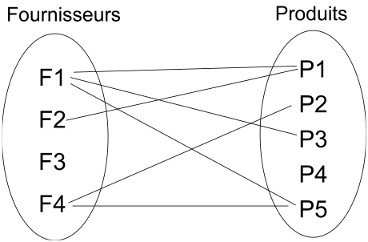

La notation UML
Méthodologie de développement
Nous allons aborder les points suivants :
-
Pourquoi l’orienté objet ?
-
Pourquoi UML?
-
Processus de développement
-
Conception logicielle
Pourquoi l’orienté objet ?
-
Prendre en compte tout le système
-
Ce que fait le système + comment il est organisé pour le faire
-
Quelques concepts fondamentaux :
-
les objets
-
les messages
-
les classes
-
l’héritage et le polymorphisme
-
Pourquoi UML?
-
tout le cycle de vie :
-
visualisation
-
spécification
-
construction du système
-
documentation
-
-
synthèse des meilleurs aspects des méthodes courantes
-
standard mondial
Processus de développement
Activités de bases :
-
Expression des besoins
-
Identification de l’environnement et du contexte
-
Planification
-
Analyse
-
Conception
-
Implémentation
-
Test
-
Révision
Plusieurs approches :
-
Cycle en cascade ("waterfall")
-
En spiral (Boehm)
-
Itératif (RUP, openUP)
-
Inception : évaluation initiale (risques, etc.)
-
Elaboration : architecture, principaux éléments
-
Construction : développement incrémentale
-
Transition : déploiement, formation
-
-
eXtreme Programming
-
ensembles de "principes"
-
Conception logicielle
Qu’est-ce qu’une bonne conception?
-
elle est conforme aux besoins fonctionnels / non-fonctionnels
-
elle est modulable et extensible
-
elle est compréhensible et vérifiable
-
elle est aussi simple que possible
Quelques éléments dans ce sens :
-
séparations des responsabilités (e.g., 3-tiers)
-
modularité
-
faible dépendance et forte cohésion
-
utilisation de standards (outils, langages et notations)
Notation pour la copnception
-
Cas d’utilisation
-
Diagrammes de classe
-
Diagrammes d'état (statechart)
-
Diagrammes d’interaction (scénarios)
-
Diagrammes de séquence
-
Diagrammes de communication (collaboration)
-
Spécification des opérations et méthodes
-
Diagrammes de flux d'écran
-
Tables de décision
-
CRC
-
…
UML en résumé
-
Diagrammes
-
13 dans la version 2.0
-
-
Principes généraux
-
Mécanismes
-
paquetages
-
stéréotypes
-
étiquettes
-
notes
-
contraintes
-
Diagrammes
Plus tard
Principes généraux
Plus tard
Mécanismes
Plus tard
Principaux diagrammes
Diagramme des UC
Plus tard
Diagramme de séquence
Plus tard
Diagramme de classe
Nous souhaitons représenter les données manipulées par le système, ainsi que les relations entre ces données.
|
Note
|
Nous parlons pour l’instant de classe, vous parlerez bientôt en C de structure. Pour l’instant considérons que les 2 sont équivalents. |
Concept de Classe
Une classe est une représentation unique servant à caractériser un ensemble d’objets jouant un rôle identique et décrits par les mêmes attributs.
|
Note
|
Nous utiliserons la convention d’écriture suivante :
|
Classes et objets
En programmation on parle de type et de variable. Même si c’est un raccourci très rapide
nous pouvons pour l’instant faire le parallèle entre les notions de classe et d'objet.
On parlera toutefois d'instance pour désigner un objet issu d’une classe.
Attributs
Un attribut est une propriété représentative d’un objet (nom d’une personne, couleur d’une voiture, moyenne d’un étudiant…).
Un attribut possède une valeur associée à chaque objet d’une classe.
|
Note
|
Nous utiliserons la convention d’écriture suivante :
|
|
Tip
|
Les noms des attributs de type booléen seront précédés du préfixe Exemples :
|
Identifiant
Un identifiant est un attribut particulier d’une classe dont les valeurs représentent sans ambiguïté chaque objet de la classe.
|
Tip
|
Choix d’un identifiant
Il faut prendre un attribut non ambigu (le nom d’une personne ne convient pas) et court (le numéro de sécu est trop long). |
|
Note
|
Convention : Les noms des identifiants commenceront par le préfixe |
Association
Une association est un ensemble de liens permanents existant entre les objets de deux ou plusieurs classes. On dira qu’une association lie plusieurs classes ou que les classes participent à l’association.
|
Note
|
Exemple
Dans l’exercice sur l’Agence de Voyage, une fiche |
Dimension d’une association :
Nombre de classes mises en jeu par l’association
(binaire : 2, ternaire : 3, n-aire : n)
Exemple d’association binaire
Soient les classes Fournisseurs et Produits.
On veut indiquer quels sont les produits susceptibles d’être fournis par chaque fournisseur et quels sont les fournisseurs susceptibles de fournir chaque produit.

Nom d’une association :
Afin de clarifier les informations, il est important de nommer les associations.
Il existe trois façons de nommer une association :
-
un verbe à l’infinitif (e.g.,
Fournir) -
un verbe conjugué avec un sens de lecture :
Fournit >ou< Est fourni par -
un rôle (placé à une extrémité de l’association)
|
Note
|
Un nom d’association commencera par une majuscule comme les noms de classes. |
Cardinalité :
Indique à combien d’objets minimum et maximum de la classe d’en face est lié tout objet de la classe de départ. Elle est représentée par un couple (M..N). Elle représente le nombre minimum et maximum d’objets (de la classe de ce côté-ci
de l’association) qui peuvent être en association avec un objet donné (de l’autre côté de l’association).
|
Note
|
Attention, dans une cardinalité |
Cardinalités classiques :
-
*: signifie[0..N]avecNindéterminé. Très utilisé pour les associations multiples optionnelles. -
1..*: signifie[1..N]avecNindéterminé. Très utilisé pour les associations multiples obligatoires. -
1: signifie[1..1]
Représentation
Représentation des classes
Une classe est représentée par un rectangle divisé en plusieurs compartiments. Le compartiment supérieur contient le nom de la classe et le compartiment inférieur la liste des attributs (l’identifiant est placé en tête de liste).

Représentation des associations
Une association binaire est représentée par un trait reliant deux classes. Le nom de l’association est placé à proximité du trait et les cardinalités sont placées de part et d’autre.
Classe association
Certains attributs ne dépendent pas d’une seule classe, mais de plusieurs. Exemple : le prix d’un produit selon le fournisseur qui le propose.
Pour les représenter, ils seront placés dans une classe-association reliée au trait de liaison par un trait en pointillés. Le nom de l’association sera alors placé dans la classe-association.
Pour dessiner rapidement de l’UML
Les schémas de cette section sont écrits en utilisant le langage PlantUML.
Par exemple le schéma précédent a été réalisé à partir du code suivant :
@startuml
class Produits {
idPro
designation
poids
}
class Fournisseurs {
idFour
raisonSociale
adresse
}
Produits "0..*" -- "0..*" Fournisseurs : Fournir
@enduml|
Note
|
Vous pouvez tester en ligne : http://www.plantuml.com/plantuml/ |
Exercices de révision
-
Réalisez le diagramme de classes suivant :
-
Les étudiants possèdent un numéro d'étudiant (identifiant), un nom, un prénom, une date de naissance. Ils suivent des cours (titre, code du module).
-
Les examens concernent un cours donné. Chaque examen a lien à une certaine date et possède un coefficient.
-
Pour chaque examen un étudiant à une note.
-
Les cours sont enseignés par un enseignant (nom, prénom)
-
-
Réalisez le diagramme de classes suivant :
-
Un portable possède un clavier
-
Un clavier peut-être de type "azerty" ou "querty"
-
Un clavier possède des touches
-
Un portable a un 0 ou 1 propriétaire qui a lui même un nom et un prénom
-
Un portable a un prix d’achat et une valeur actuelle (souvent différente)
-
Diagramme de classe avancé
Plus tard
-
agrégation
-
composition
-
généralisation